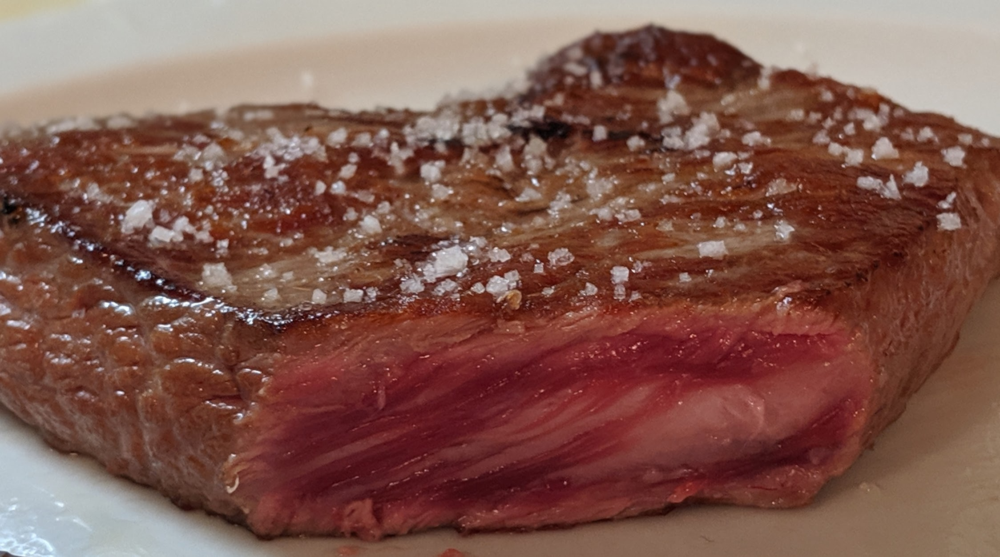

I eat primarily animal-based foods. 1
If you are looking to maintain (rather than lose) weight on carnivore diet, it is critical to be on ketosis by aiming close to a 2:1 fat:protein ratio in weight. The author had to learn this over time.

Why?
In early 2013, a medical doctor prescribed me enough antibiotics 2 so as to mess up my gut (and possibly skin) microbiome. This lead to what was then a mild folliculitis to become severe chronic folliculitis with chronic seborrhoeic dermatitis following suit.
I suffered with this condition for over 4 years, and saw plethora of dermatologists (who knew naught but to prescribe ever more antibiotics 3 ; one even had me do low-dose Accutane which lead to chronic dry skin). Then, just within two weeks of going on the carnivore diet (beef, salt and pepper) my symptoms dramatically reduced (down to about 95% 4 ). Over the next years I was to reintroduce several plant foods; and everytime I do, my symptoms would come back in vengeance.
Takeaway: Doctors and nutritionists are generally not to be trusted blindly, especially when it comes to the topic of antibiotics and diet. Although harbouring no ill-will, most of them 5 can’t help but overweeningly 6 7 trot out what they had been taught (with bias) in medical schools … and quackery and misinformation is not very uncommon. As one HN commenter puts it:
Listen to the doctor, but also do your own research. I can guaran-damn-tee that you will obtain vastly superior results. It’s not that all doctors are scoundrels looking to kill you & take your wallet. It’s that they are afflicted by the same tunnel-vision, group-think, & subconscious self-interest as any other group of professionals.
“Isn’t it unsafe?”
Contrary to popular belief and health “knowledge” – promoted by Dietary Guidelines Misinformation based in part on Vegan Indoctrination - the carnivore diet (especially with offal, like Liver) provides all the necessary nutrients and is safe. Meat is the only “nutritionally complete” food, and some indigenous groups have traditionally eaten an all-meat (or predominantlly animal-based) diet.
One ought to pay lip service to general medical wisdom and any dominant nutrition ideology as they are laced with an anti-meat bias (as well as Climate Alarmism) using pseudoscientific nutrition epidemiological studies where, depending on the researcher’s nutritional bias, one can establish any food item to be problematic.
Resources
``
- Healing reports 8
- Getting started
-
Science
- Overviews
-
Detailed:
- Behavioral Characteristics and Self-Reported Health Status among 2029 Adults Consuming a “Carnivore Diet”
- Can a carnivore diet provide all essential nutrients?
- Examine: Five new reviews looked at the evidence on red and processed meat consumption. The results caused quite a stir, as they seemed to contradict the recommendations of many dietary guidelines. We break down the evidence and what it means for you.
- Priority Micronutrient Density in Foods - “Foods with very high aggregate micronutrient density for WRA include organs (Liver, spleen, kidney, and heart from beef, goat, lamb, chicken, and pork), small dried fish, DGLVs, bivalves (clams, mussels, and oysters), crustaceans, goat, beef, eggs, milk, canned fish with bones, lamb/mutton, and cheese. Foods with a high aggregate micronutrient density include goat milk and pork. Foods with a moderate aggregate micronutrient density include yogurt, fresh fish (including different species of marine and freshwater fish), pulses, and teff. All other foods included in the analysis scored as having low aggregate micronutrient density for WRA.”
- Not all nutrients are easily obtained from plants only - “Besides many priority minerals and vitamins, animal source foods also contain bioactive molecules with various health benefits, such as taurine, creatine, carnosine, and others, contributing to heart health, cognitive health, and immune function.”
- Paleolithic Ketogenic Diet (PKD): a variation of the carnivore diet—high fat, organ meat, without dairy or spices—designed to heal intestinal permeability and certain medical conditions.
- Medical
- On this site
- Social Media / Culture / Politics (of meat)
Relevant News
-
2020 Feb: “The use of minocycline in acne vulgaris has been associated with skin and gut dysbiosis” (Wikipedia)
- Source: Minocycline and Its Impact on Microbial Dysbiosis in the Skin and Gastrointestinal Tract of Acne Patients 2020 Feb;32(1):21-30. doi: 10.5021/ad.2020.32.1.21. Epub 2020 Jan 9. Reddit submission
From danluu: Willingness to look stupid
I’ve found that a lot of doctors are very confident in their opinion and get condescending pretty fast if you disagree. And yet, in the most extreme case, I would have died if I listened to my doctor; in the next most extreme case, I would have gone blind. [..]
From Jenin Younes
I had a foray with the medical health establishment in my 20s that attuned me to the fact that those within it often don’t care about quality of life, but only about preventing death